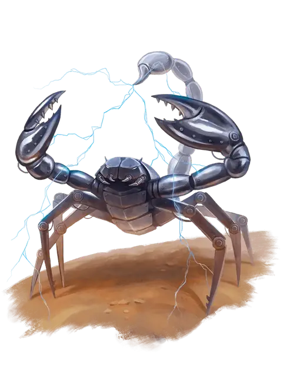

Скаладар
Scaladar
Огромный Конструкт, без мировоззрения

Класс Доспеха 19 (природный доспех)
Хиты 94 (7к12 + 49)
Скорость 30 футов, лазая 20 футов
| мод | спас | ||
|---|---|---|---|
| СИЛ | 19 | +4 | +4 |
| ЛОВ | 10 | +0 | +0 |
| ТЕЛ | 25 | +7 | +7 |
| мод | спас | ||
|---|---|---|---|
| ИНТ | 1 | −5 | −5 |
| МДР | 12 | +1 | +1 |
| ХАР | 1 | −5 | −5 |
Сопротивление урону огонь; дробящий, колющий, рубящий от немагических атак
Иммунитет к урону силовое поле, электричество, яд
Иммунитет к состояниям отравление, паралич, очарование
Чувства тёмное зрение 60 футов, пассивное Восприятие 11
Опасность 8 (3900 опыта)
Бонус мастерства +3
Особенности
Поглощение молний. . Всякий раз, когда скаладар подвергается урону электричеством, он не получает никакого урона, а его жало дополнительно наносит 11 (2к10) урона электричеством до конца своего следующего хода.
Связь скаладаров. . Скаладар знает расположение других скаладаров в пределах 100 футов от себя, и он чувствует, когда любой из них получает урон.
Действия
Мультиатака. . Скаладар совершает три атаки: две когтями и одну жалом.
Когти. . Рукопашная атака оружием: +7 к попаданию, досягаемость 10 фт., одна цель. Попадание: 10 (1к12 + 4) дробящий урон, и цель становится схваченной (Сл высвобождения 15). У скаладара два когтя и каждым он может схватить одну цель.
Жало. . Рукопашная атака оружием: +7 к попаданию, досягаемость 10 фт., одна цель. Попадание: 9 (1к10 + 4) колющий урон плюс 11 (2к10) урон электричеством.
Описание
Скаладары это конструкты, созданные Тробриандом, одним из учеников Халастера. Они передвигаются и атакуют, как гигантские скорпионы, захватывая добычу двумя большими клешнями и нанося смертельный удар молнией своим металлическим жалом на хвосте.
Кольца Тробрианда. Для управления скаладарами Тробрианд создал волшебные кольца. Каждое кольцо представляет собой чёрную металлическую петлю с выступом в форме жала. Ни один скаладар не может причинить вред владельцу кольца, и любой скаладар в радиусе 100 футов от владельца кольца должен подчиняться его устным командам. Магия кольца позволяет скаладару понимать и интерпретировать эти команды, даже от не владеющего известным языком существа. Если от двух разных носителей кольца получены противоречивые команды, скаладар немедленно отключается и становится недееспособным в течение 1 часа. У Тробрианда есть главное кольцо, позволяющее ему перераспределять команды других носителей кольца, не вызывая отключения скаладара. Кольца Тробрианда действуют только в Подгорье.
Природа конструкта. Скаладару не нужен воздух, еда, питьё и сон.